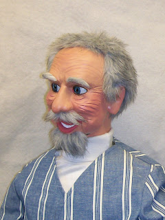

On the straight and narrow?
8/30/2009
{kind=link}

Remember this gent? He now resides in Phoenix with an Episcopal Bishop of the Diocese of Arizona. As I build these characters I never know for sure what they're going to be doing when they "grow up" - that's one of the intriguing aspects of figure making. (Not totally unlike parenting. :-)
And now, a word from his new owner ...
* * * * * * *
"Hello, Mr. Detweiler, Just a note to let you know that the old man figure arrived in great shape a couple of days ago. I think he is terrific! Such an expressive face!
"I've decided to turn him into an old cowboy figure (which works well here in Arizona). I have a child's cowboy costume with a little hat, vest, chaps, and will eventually get him some small cowboy boots. I am going to call him 'Shorty.' I will send you a picture when I get his outfit together.
"He will be making his debut around the middle of August at the churches I visit. In years past I've used a soft puppet which I got from Maher about 25 years ago, 'Dexter.' He has been a huge hit as I travel around and visit parishes. He normally comes out doing the announcement time and we do a kind of children's sermon in the form of a funny dialogue. I think the adults enjoy it as much or more than the kids.
"Again, thank you for your talents. I am proud to own a 'one of a kind' figure from you!
Kirk Smith